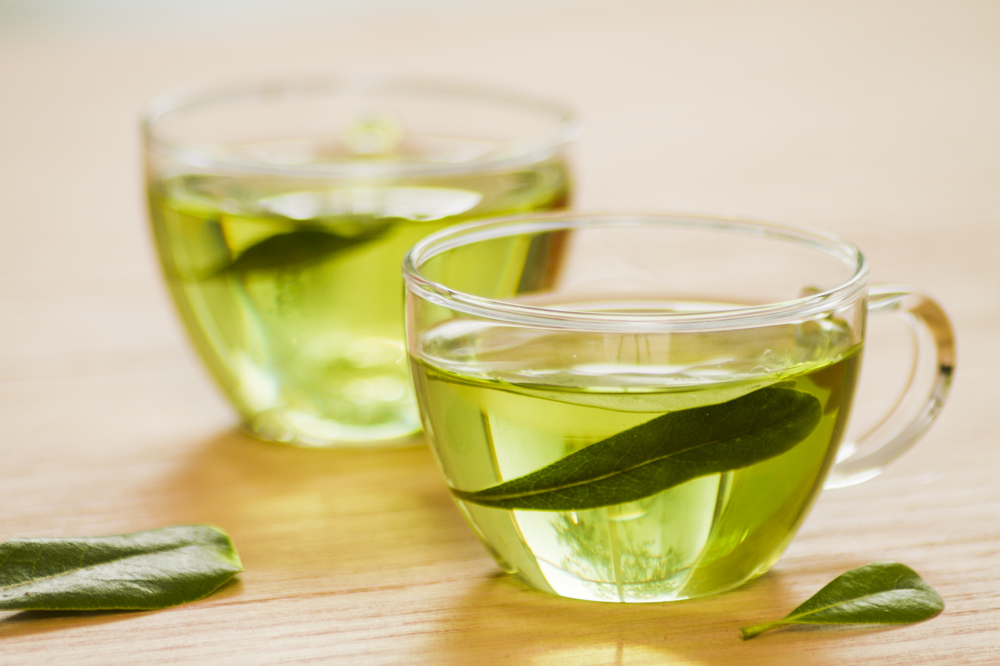

Rich in Antioxidants
Green tea contains catechins and other antioxidant compounds that help protect cells from oxidative stress. These compounds are one reason green tea is widely studied for its potential role in overall health.
Green tea is known for its refreshing flavour and natural antioxidants. Discover five reasons to make this soothing drink part of your daily routine.

Green tea has been enjoyed for centuries for its delicate flavour, comforting warmth, and natural plant compounds. Made from the leaves of the Camellia sinensis plant, it is a popular choice for people looking to enjoy a refreshing drink.
Green tea contains antioxidants called catechins, including EGCG, which have been studied for their potential health benefits. It also contains caffeine, so its effects can vary from person to person.
From supporting alertness to offering a pleasant alternative to sugary drinks, green tea can be a simple addition to a balanced lifestyle. Let's explore five possible benefits.
Green tea contains catechins and other antioxidant compounds that help protect cells from oxidative stress. These compounds are one reason green tea is widely studied for its potential role in overall health.
Research suggests that drinking green tea may be associated with modest improvements in some cardiovascular risk factors, including cholesterol levels. It works best alongside a balanced diet and an active lifestyle.
Green tea contains caffeine, which can help improve alertness and concentration. It also contains L-theanine, an amino acid studied for its effects on attention and relaxation.
Green tea's caffeine and catechins may have a small effect on energy expenditure. However, green tea is not a magic solution for weight loss and should be enjoyed as part of healthy everyday habits.
A cup of green tea contributes to your daily fluid intake. Its light, refreshing flavour makes it a pleasant alternative to sugary drinks. Choose it plain or add a slice of lemon if you prefer.
Start with one teaspoon of green tea leaves or one tea bag in a cup. Pour in hot water that has cooled slightly after boiling, then steep for two to three minutes.
Remove the leaves or tea bag and let the tea cool to a comfortable temperature. You can enjoy it warm on a quiet morning or serve it chilled on a sunny afternoon.
Green tea is generally safe for most adults in moderate amounts. However, it can interact with certain medicines, and concentrated green tea extracts may cause side effects. If you have health concerns or take medication, ask a healthcare professional for advice.
Discover the simple pleasure of green tea and find your favourite way to enjoy every cup with INFUSION.
Back to Blog Explore Our Tea Collection